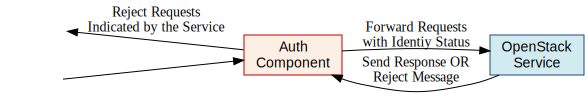

Middleware Architecture¶
Abstract¶
The Keystone middleware architecture supports a common authentication protocol in use between the OpenStack projects. By using keystone as a common authentication and authorization mechanisms, the OpenStack project can plug in to existing authentication and authorization systems in use by existing environments.
In this document, we describe the architecture and responsibilities of the authentication middleware which acts as the internal API mechanism for OpenStack projects based on the WSGI standard.
For the architecture of keystone and its services, please see Keystone Architecture. This documentation primarily describes the implementation in keystone/middleware/auth_token.py (keystone.middleware.auth_token.AuthProtocol)
Specification Overview¶
‘Authentication’ is the process of determining that users are who they say they are. Typically, ‘authentication protocols’ such as HTTP Basic Auth, Digest Access, public key, token, etc, are used to verify a user’s identity. In this document, we define an ‘’authentication component’’ as a software module that implements an authentication protocol for an OpenStack service. OpenStack is using a token based mechanism to represent authentication and authorization.
At a high level, an authentication middleware component is a proxy that intercepts HTTP calls from clients and populates HTTP headers in the request context for other WSGI middleware or applications to use. The general flow of the middleware processing is:
- clear any existing authorization headers to prevent forgery
- collect the token from the existing HTTP request headers
- validate the token
- if valid, populate additional headers representing the identity that has been authenticated and authorized
- in invalid, or not token present, reject the request (HTTPUnauthorized) or pass along a header indicating the request is unauthorized (configurable in the middleware)
- if the keystone service is unavailable to validate the token, reject the request with HTTPServiceUnavailable.
Authentication Component¶
Figure 1. Authentication Component

The middleware may also be configured to operated in a ‘delegated mode’. In this mode, the decision reject an unauthenticated client is delegated to the OpenStack service, as illustrated in Authentication Component (Delegated Mode).
Here, requests are forwarded to the OpenStack service with an identity status message that indicates whether the client’s identity has been confirmed or is indeterminate. It is the OpenStack service that decides whether or not a reject message should be sent to the client.
Authentication Component (Delegated Mode)¶
Figure 2. Authentication Component (Delegated Mode)
Deployment Strategy¶
The middleware is intended to be used inline with OpenStack wsgi components, based on the openstack-common WSGI middleware class. It is typically deployed as a configuration element in a paste configuration pipeline of other middleware components, with the pipeline terminating in the service application. The middleware conforms to the python WSGI standard [PEP-333]. In initializing the middleware, a configuration item (which acts like a python dictionary) is passed to the middleware with relevant configuration options.
Configuration¶
The middleware is configured within the config file of the main application as a WSGI component. Example for the auth_token middleware:
[app:myService]
paste.app_factory = myService:app_factory
[pipeline:main]
pipeline = tokenauth myService
[filter:tokenauth]
paste.filter_factory = keystone.middleware.auth_token:filter_factory
auth_host = 127.0.0.1
auth_port = 35357
auth_protocol = http
auth_uri = http://127.0.0.1:5000/
admin_token = Super999Sekret888Password777
admin_user = admin
admin_password = SuperSekretPassword
admin_tenant_name = service
;Uncomment next line and check ip:port to use memcached to cache tokens
;memcache_servers = 127.0.0.1:11211
;Uncomment next 2 lines if Keystone server is validating client cert
certfile = <path to middleware public cert>
keyfile = <path to middleware private cert>
Configuration Options¶
- auth_host: (required) the host providing the keystone service API endpoint for validating and requesting tokens
- admin_token: either this or the following three options are required. If set, this is a single shared secret with the keystone configuration used to validate tokens.
- admin_user, admin_password, admin_tenant_name: if admin_token is not set, or invalid, then admin_user, admin_password, and admin_tenant_name are defined as a service account which is expected to have been previously configured in Keystone to validate user tokens.
- delay_auth_decision: (optional, default 0) (off). If on, the middleware will not reject invalid auth requests, but will delegate that decision to downstream WSGI components.
- auth_port: (optional, default 35357) the port used to validate tokens
- auth_protocol: (optional, default https)
- auth_uri: (optional, defaults to auth_protocol://auth_host:auth_port)
- certfile: (required, if Keystone server requires client cert)
- keyfile: (required, if Keystone server requires client cert) This can be the same as the certfile if the certfile includes the private key.
Caching for improved response¶
In order to prevent every service request, the middleware may be configured to utilize a cache, and the keystone API returns the tokens with an expiration (configurable in duration on the keystone service). The middleware supports memcache based caching.
- memcache_servers: (optonal) if defined, the memcache server(s) to use for cacheing
- token_cache_time: (optional, default 300 seconds) Only valid if memcache_servers is defined.
Exchanging User Information¶
The middleware expects to find a token representing the user with the header X-Auth-Token or X-Storage-Token. X-Storage-Token is supported for swift/cloud files and for legacy Rackspace use. If the token isn’t present and the middleware is configured to not delegate auth responsibility, it will respond to the HTTP request with HTTPUnauthorized, returning the header WWW-Authenticate with the value Keystone uri=’...’ to indicate where to request a token. The auth_uri returned is configured with the middleware.
The authentication middleware extends the HTTP request with the header X-Identity-Status. If a request is successfully authenticated, the value is set to Confirmed. If the middleware is delegating the auth decision to the service, then the status is set to Invalid if the auth request was unsuccessful.
Extended the request with additional User Information¶
keystone.middleware.auth_token.AuthProtocol extends the request with additional information if the user has been authenticated.
- X-Identity-Status
- Provides information on whether the request was authenticated or not.
- X-Tenant-Id
- The unique, immutable tenant Id
- X-Tenant-Name
- The unique, but mutable (it can change) tenant name.
- X-User-Id
- The user id of the user used to log in
- X-User-Name
- The username used to log in
- X-Roles
- The roles associated with that user
Deprecated additions¶
- X-Tenant
- Provides the tenant name. This is to support any legacy implementations before Keystone switched to an ID/Name schema for tenants.
- X-User
- The username used to log in. This is to support any legacy implementations before Keystone switched to an ID/Name schema for tenants.
- X-Role
- The roles associated with that user
References¶
| [PEP-333] | pep0333 Phillip J Eby. ‘Python Web Server Gateway Interface v1.0.’’ http://www.python.org/dev/peps/pep-0333/. |